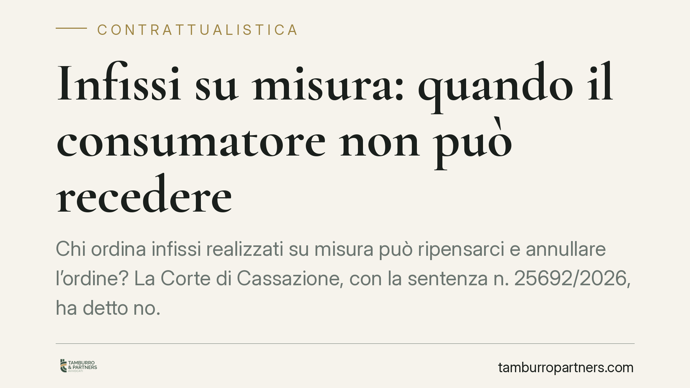

Infissi su misura: quando il consumatore non può recedere
Chi ordina infissi realizzati su misura può ripensarci e annullare l'ordine? La Corte di Cassazione, con la sentenza n. 25692/2026, ha detto no. La fornitura di beni progettati sulle specifiche del cliente si qualifica come appalto, non come vendita, e questo esclude il diritto di recesso previsto per i contratti di consumo. Una distinzione con conseguenze concrete su acconti, penali e responsabilità.

Il caso e la decisione
Un cliente aveva ordinato infissi realizzati su misura per la propria abitazione, versando un acconto. Ripensandoci, aveva comunicato la volontà di recedere, invocando la disciplina consumeristica che tutela chi acquista a distanza o fuori dai locali commerciali.
La Corte di Cassazione, Sez. II Civile, con la sentenza n. 25692/2026 (22 settembre 2026), ha respinto questa impostazione. Secondo i giudici, quando la prestazione consiste nella progettazione e realizzazione di beni su misura del committente, il contratto non è una compravendita ma un appalto. E la disciplina del recesso del consumatore, pensata per la vendita di beni standard, non si applica ai beni personalizzati.
Inquadramento normativo
La distinzione tra vendita e appalto è decisiva. Nella vendita si trasferisce un bene già esistente o comunque standardizzato. Nell'appalto (art. 1671 c.c.) prevale l'attività di produzione: il fornitore realizza un'opera secondo le specifiche del committente, assumendosi l'organizzazione dei mezzi e il rischio d'impresa.
Quando gli infissi vengono dimensionati sui vani dell'immobile, con misure, materiali e finiture scelti dal cliente, il tratto qualificante non è la consegna di un prodotto, ma la sua *confezione su commessa*. Da qui la qualificazione come appalto.
Sul piano consumeristico, la normativa esclude espressamente il diritto di recesso per la fornitura di beni confezionati su misura o chiaramente personalizzati. È una scelta di equilibrio: il legislatore protegge il consumatore ma non gli consente di scaricare sul fornitore il costo di una produzione che, una volta avviata, non ha più mercato perché tagliata su misure irripetibili.
Cosa cambia in concreto
Per il consumatore la conseguenza è diretta: firmare un ordine di infissi su misura significa vincolarsi. Non esiste il classico "ripensamento" entro quattordici giorni valido per gli acquisti online di beni seriali. Chi recede senza giustificazione risponde secondo le regole dell'appalto.
L'art. 1671 c.c. consente al committente di recedere dal contratto d'appalto anche dopo l'inizio dei lavori, ma a condizione di tenere indenne l'appaltatore: deve rimborsare le spese sostenute, i lavori eseguiti e il mancato guadagno. Non è quindi un recesso a costo zero, ma un recesso oneroso.
Per il fornitore, la sentenza offre una tutela importante. Un ordine annullato a lavorazione avviata non comporta la perdita dell'investimento, purché si sappia documentare quanto già fatto e quantificare il pregiudizio.
Attenzione però: la qualificazione come appalto non è automatica. Se gli infissi provengono da un catalogo standard e la personalizzazione è marginale, il giudice può ricondurre il rapporto alla vendita, con riespansione delle tutele consumeristiche. Conta la sostanza dell'operazione, non l'etichetta apposta al contratto.
Cosa fare in concreto
- Qualifica correttamente il contratto: specifica per iscritto che la fornitura riguarda beni progettati e realizzati su misura, descrivendo misure, materiali e finiture concordate.
- Disciplina acconti e recesso: inserisci una clausola che regoli le conseguenze economiche del recesso del committente, coerente con l'art. 1671 c.c.
- Documenta lo stato di avanzamento: conserva ordini di produzione, fatture dei materiali e prove delle lavorazioni eseguite, utili a quantificare spese e mancato guadagno.
- Verifica il grado di personalizzazione: se il prodotto è di catalogo con minime varianti, non dare per scontata l'esclusione del recesso; valuta caso per caso.
- Informa il consumatore in fase precontrattuale: chiarire fin dall'ordine l'assenza del diritto di ripensamento riduce il contenzioso e rafforza la posizione del fornitore.
La pronuncia conferma un principio già consolidato ma spesso trascurato nella prassi commerciale: la personalizzazione del bene sposta l'asse del contratto e ridisegna diritti e obblighi delle parti. Redigere con cura il testo contrattuale, prima ancora che gestire la controversia, resta lo strumento più efficace di prevenzione.
Contributo informativo a cura di Tamburro & Partners - Avv. Giuseppe Tamburro. Non costituisce parere legale.
Ogni contratto ha il suo equilibrio.
Se vuoi una revisione delle clausole o una redazione su misura, scrivi allo studio. Ti rispondiamo entro un giorno lavorativo.